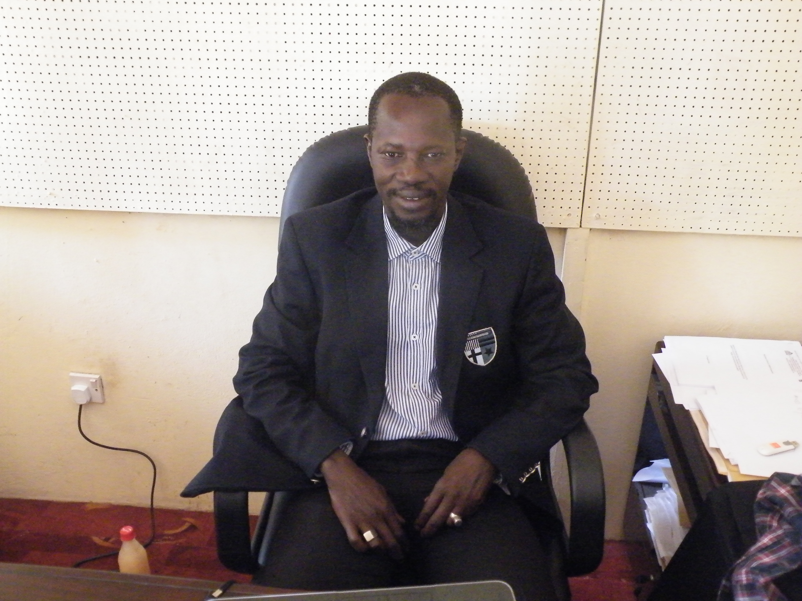

Mr. Kawsu Jammeh
An inspiring person

Mr. jammeh is the President of Sahel Wetlands Concern (Lobby)and Secretary General Africa Mangrove Network Gambia/ Green Actors West Africa Gambia.
- 1985-Went to Gambia High School
- 1998-Study Natural history, Wildlife Management, Habitat Management, Wetlands Management, Ornithology, Mangroves & Estuary Ecology, Legislation, Vegetation Survey, Ecotourism and Protected Area Management
- 2003-Practical knowledge in Waterfowl Census & Wetlands Management Course
- 2003 to 2004-Sahel Organization for Promoting Environmental Education President.
- 2004-Training Course on Survey of bird density in Rice and Mangrove Zone at guinea bisau. also work at Tanbi Wetlands National Park as Senior Park Warden.
- 2005-Wetlands and Water Resources Management, Wetlands Valuation, Policy Setting and Advocacy and Financial Mechanism at Uganda Wildlife Education Center, Uganda.
- 2005-President Sahel Wetlands Concern (Lobby)
- 2007-President Sahel Wetlands Concern (Lobby)and Secretary General Africa Mangrove Network Gambia/ Green Actors West Africa Gambia.
- 2009-take part in an International workshop on Oil Spill contingency planning Protected area management at banjul,The Gambia.
- 2009- Studied African Environmental History, Poverty and Environment, Population and Environment, Global Environmental Remote Sensing, Ecological Economics, Environmental Conflict Resolution, Global Climate Change, Multilateral Environmental Governance, Managing Biodiversity in context of Land Use Change, Geographical Information System for Environmental Applications at Watson Institute of International Studies, Brown University, Providence, RI USA
- 2011- Climate change and forest, Climate change mitigation, REDD and REDD Plus, Accreditation of DOE for CDM, CDM Project formulation stages and process, participatory CDM implementation experience, CDM Sequestration model, combating desertification and stabilization of sand dune, combating desertification and sustainable land use management, water conservation and importance of traditional practices, wildlife management in the deserts at Central Academy for State Forest Service, Dehradun, India
- 2013- Nagoya protocol on ABS and related TK Provision, Innovative approach to ABS, Ratification and implementation of Nagoya protocol, India’s experience on ABS, Sharing of experience in implementing ABS regimes in Africa, traditional knowledge digital library, Legal issues relating to Biodiversity at India National Biodiversity Authority held at Orchid Hotel, Bangalore
- 2015- attended UNDP Project Management Training Workshop Addis Ababa, Ethiopia.
- 2015- attended RAMSAR COP Preparatory Meeting Tunis, Tunisia
- 2015- Attended RAMSAR COP Meeting Punte de Leste, Uruguay.
Here's a time line of Mr. Jammeh's life:
"Mr. Jammeh's life and achievements are incredible.many youths will look up to him."
--Modou Lamin Jammeh